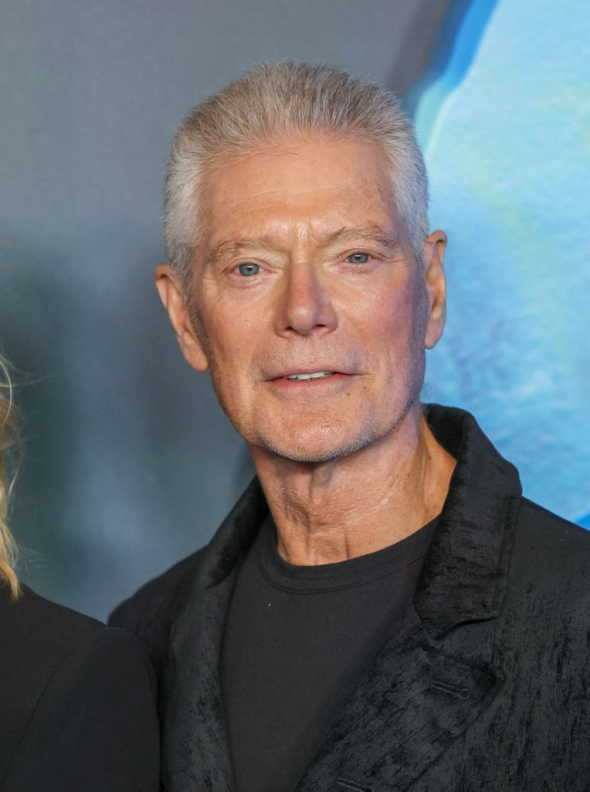

Reparto
Sam Worthington
Interpreta a Jake Sully, un exhumano convertido en Na’vi que lidera a su familia.

Zoe Saldaña
Interpreta a Neytiri, la valiente guerrera Na’vi y madre de los hijos de Jake.

Sigourney Weaver
Regresa interpretando a Kiri, la hija adoptiva de Jake y Neytiri, con un misterioso vínculo con Eywa.

Stephen Lang
Interpreta al Coronel Miles Quaritch, quien vuelve en forma de avatar para liderar la ofensiva humana.